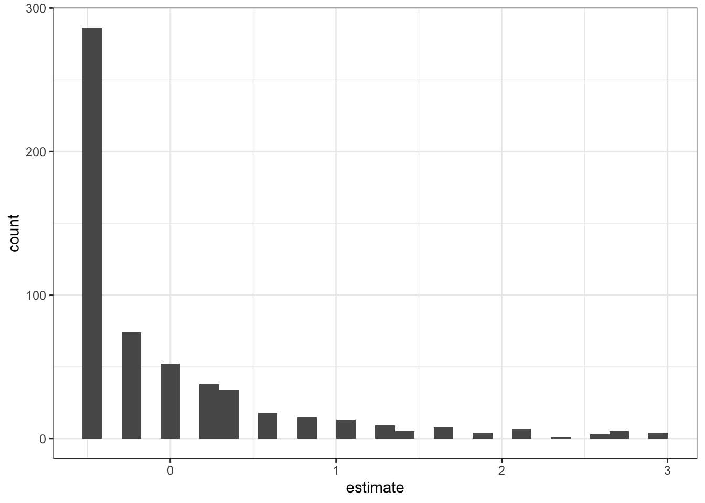
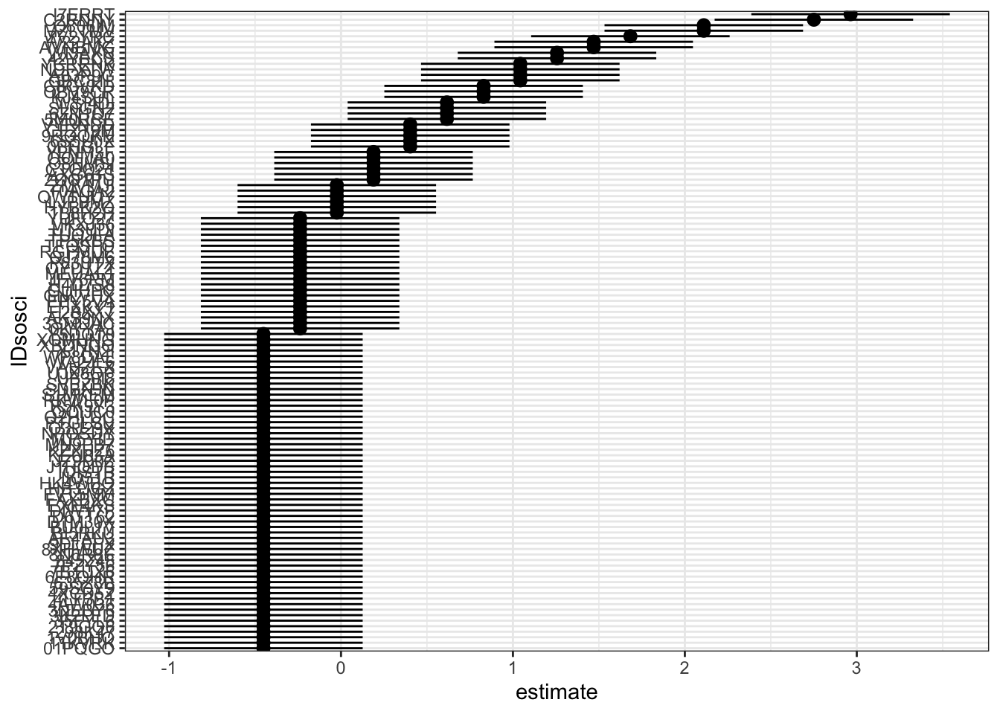
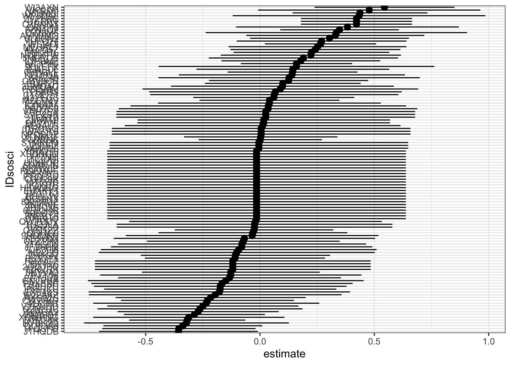

Abschnitt 4 Random effects Modelle
- In diesem Abschnitt beschäftigen wir uns mit random effects Modellen. Zuerst führen wir die Modellklasse ein. Dann betrachten wir kurz, wie die Modelle in der Tradition der Ökonometrie mit
plmspezifiziert werden können, bevor wir zur allgemeineren Umsetzung mit dem Paket für Mehrebenen- bzw. mixed effects Modellelme4kommen.
4.1 Einführung: Random effects Modelle für Paneldaten
Modellspezifikation
Anstatt wie im fixed effects Modell für jede Einheit (Person) eine separate Konstante \(\alpha_i\) zu schätzen, können wir einen “soft constraint” (Gelman and Hill 2006, S. 257) setzen, dass die personenspezifischen Konstanten bzw. Residuen einer Verteilung folgen:
- \(\alpha_{i} ∼ \mathcal{N}(\mu_{\alpha},\sigma^2_\alpha)\) mit \(i = 1,...,n\)
Das random effects Panel-Modell wird geschätzt als
- \(y_{it}=x_{it}'\beta + z_i'\gamma + v_{it}\)
- \(v_{it} = \alpha_{i} + u_{it}\)
- mit \(y_{it}\) über Personen (\(i\)) und Zeit (\(t\)) variierendes Kriterium, \(x_{it}'\) über Personen und Zeit variierende Prädiktoren, \(\beta\) Koeffizienten der über Personen und Zeit variierenden Prädiktoren, \(z_i'\) über Personen variierende Prädiktoren, \(\gamma\) Koeffizienten der über Personen variierenden Prädiktoren, \(v_{it}\) gesamter Fehlerterm, \(\alpha_{i}\) personenspezifische Konstanten, \(u_{it}\) Residuen.
Damit die Schätzer für \(\beta'\) unverzerrt sind, müssen zwei Annahmen erfüllt sein:
- Keine über die Zeit konstante Heterogenität, deren Ursache nicht im Modell ist
- \({\displaystyle \operatorname {E} (\alpha _{i}|x_{it})=\operatorname {E} (\alpha _{i})=0}\)
- Keine über die Zeit variierende Heterogenität, deren Ursache nicht im Modell ist
- \({\displaystyle \operatorname {E} (u_{it}|x_{it},\alpha _{i})=0,\quad t=1,...,T.}\)
Vorteile der random effects Modelle für Panel-Daten
- Schätzer für über die Zeit konstante Prädiktoren und gleichzeitig Konstante für jede Person.
- Schätzer von über die Zeit variierenden und über die Zeit konstanten Prädiktoren können verglichen werden.
- Vorhersagen für neue Personen außerhalb der Stichprobe können unter Einbeziehung aller Informationen und unter Berücksichtigung der gesamten Unsicherheit gemacht werden.
- Die Annahme homogener Treatment-Effekte kann gelockert werden.
Sind die Annahmen des random effects Modell für Paneldaten jemals erfüllt?
The only difference between RE and FE lies in the assumption they make about the relationship between υ and the observed predictors: RE models assume that the observed predictors in the model are not correlated with \(v\) while FE models allow them to be correlated.
A moment’s reflection on what \(v\) represents—-all unmeasured time-constant factors about the respondent—-should lead anyone to realize that the RE assumption is heroic in social research, to say the least.
The idea that the characteristics we don’t (or can’t) measure (like personality or genetic influences) are uncorrelated with the things we usually do measure (like income or church attendance) is implausible. — Vaisey and Miles (2017), S. 47
Hausman-Test
- Der Hausman-Test prüft, ob das random effects Modell konsistent ist.
- Nach der traditionellen Sichtweise der Ökonometrie spricht das Verwerfen der \(H_0\) im Hausman-Test gegen das Schätzen eines random effects Modells.
- Da das random effects Modell in der Lage ist, Forschungsfragen zu beantworten, an denen das fixed effects Modell per Definition scheitert, lässt sich die Wahl des random effects Modells auch inhaltlich begründen — ohne einen Hausman-Test durchzuführen (Bell, Fairbrother, and Jones 2019).
- Der Hausman-Test kann mit der Funktion
plm::phtest()durchgeführt werden.
##
## Hausman Test
##
## data: verh1 ~ verhint1
## chisq = 301, df = 1, p-value <2e-16
## alternative hypothesis: one model is inconsistent- In diesem Beispiel spricht der Hausman-Test dagegen, ein random effects Modell zu schätzen.
4.2 Random effects Modelle mit plm
- Random effects Modelle für Paneldaten in der ökonometrischen Tradition lassen sich mit
plmschätzen. Die Schätzung erfolgt auf Basis von Transformationen im Least-squares-Framework (ich habe keine Ahnung, wie das funktioniert). Ich selbst nutze diese Funktionalität in der Praxis nicht. Die Modellspezifikationen sind im Folgenden der Vollständigkeit halber kurz aufgeführt.
# Einfaches RE Modell
plm(verh1 ~ verhint1, data = d, index = "IDsosci", model = "random") %>% summary()## Oneway (individual) effect Random Effect Model
## (Swamy-Arora's transformation)
##
## Call:
## plm(formula = verh1 ~ verhint1, data = d, model = "random", index = "IDsosci")
##
## Balanced Panel: n = 576, T = 4, N = 2304
##
## Effects:
## var std.dev share
## idiosyncratic 0.3206 0.5663 0.81
## individual 0.0744 0.2728 0.19
## theta: 0.28
##
## Residuals:
## Min. 1st Qu. Median 3rd Qu. Max.
## -2.4448 -0.1055 -0.0727 0.0389 3.6473
##
## Coefficients:
## Estimate Std. Error z-value Pr(>|z|)
## (Intercept) 0.5690 0.0276 20.6 <2e-16 ***
## verhint1 0.5320 0.0120 44.5 <2e-16 ***
## ---
## Signif. codes: 0 '***' 0.001 '**' 0.01 '*' 0.05 '.' 0.1 ' ' 1
##
## Total Sum of Squares: 1530
## Residual Sum of Squares: 823
## R-Squared: 0.463
## Adj. R-Squared: 0.462
## Chisq: 1981.77 on 1 DF, p-value: <2e-16# Mit zusätzlichem Faktor Welle
plm(verh1 ~ verhint1, data = d, index = c("IDsosci", "wave"), model = "random", effect = "twoways") %>%
summary()## Twoways effects Random Effect Model
## (Swamy-Arora's transformation)
##
## Call:
## plm(formula = verh1 ~ verhint1, data = d, effect = "twoways",
## model = "random", index = c("IDsosci", "wave"))
##
## Balanced Panel: n = 576, T = 4, N = 2304
##
## Effects:
## var std.dev share
## idiosyncratic 0.31654 0.56262 0.80
## individual 0.07546 0.27470 0.19
## time 0.00263 0.05133 0.01
## theta: 0.285 (id) 0.585 (time) 0.254 (total)
##
## Residuals:
## Min. 1st Qu. Median 3rd Qu. Max.
## -2.4799 -0.1144 -0.0697 0.0418 3.6722
##
## Coefficients:
## Estimate Std. Error z-value Pr(>|z|)
## (Intercept) 0.5724 0.0390 14.7 <2e-16 ***
## verhint1 0.5301 0.0121 43.7 <2e-16 ***
## ---
## Signif. codes: 0 '***' 0.001 '**' 0.01 '*' 0.05 '.' 0.1 ' ' 1
##
## Total Sum of Squares: 1490
## Residual Sum of Squares: 817
## R-Squared: 0.453
## Adj. R-Squared: 0.453
## Chisq: 1906.68 on 1 DF, p-value: <2e-16# Mit FE für Welle
plm(verh1 ~ verhint1 + factor(wave), data = d, index = "IDsosci", model = "random") %>%
summary()## Oneway (individual) effect Random Effect Model
## (Swamy-Arora's transformation)
##
## Call:
## plm(formula = verh1 ~ verhint1 + factor(wave), data = d, model = "random",
## index = "IDsosci")
##
## Balanced Panel: n = 576, T = 4, N = 2304
##
## Effects:
## var std.dev share
## idiosyncratic 0.3165 0.5626 0.81
## individual 0.0755 0.2747 0.19
## theta: 0.285
##
## Residuals:
## Min. 1st Qu. Median 3rd Qu. Max.
## -2.5049 -0.1345 -0.0672 0.0510 3.6936
##
## Coefficients:
## Estimate Std. Error z-value Pr(>|z|)
## (Intercept) 0.56642 0.03306 17.13 <2e-16 ***
## verhint1 0.53001 0.01219 43.49 <2e-16 ***
## factor(wave)2 -0.04533 0.03534 -1.28 0.200
## factor(wave)3 0.06729 0.03539 1.90 0.057 .
## factor(wave)4 0.00283 0.03580 0.08 0.937
## ---
## Signif. codes: 0 '***' 0.001 '**' 0.01 '*' 0.05 '.' 0.1 ' ' 1
##
## Total Sum of Squares: 1520
## Residual Sum of Squares: 817
## R-Squared: 0.463
## Adj. R-Squared: 0.462
## Chisq: 1983.94 on 4 DF, p-value: <2e-16# Mit Prädiktor auf Personenebene (funktioniert nicht in FE, siehe oben)
plm(verh1 ~ verhint1 + C_sex, data = d, index = c("IDsosci", "wave"), model = "random",
effect = "twoways") %>% summary()## Twoways effects Random Effect Model
## (Swamy-Arora's transformation)
##
## Call:
## plm(formula = verh1 ~ verhint1 + C_sex, data = d, effect = "twoways",
## model = "random", index = c("IDsosci", "wave"))
##
## Balanced Panel: n = 576, T = 4, N = 2304
##
## Effects:
## var std.dev share
## idiosyncratic 0.31654 0.56262 0.80
## individual 0.07478 0.27347 0.19
## time 0.00263 0.05133 0.01
## theta: 0.283 (id) 0.585 (time) 0.253 (total)
##
## Residuals:
## Min. 1st Qu. Median 3rd Qu. Max.
## -2.4432 -0.1535 -0.0481 0.0479 3.7019
##
## Coefficients:
## Estimate Std. Error z-value Pr(>|z|)
## (Intercept) 0.6420 0.0455 14.1 <2e-16 ***
## verhint1 0.5276 0.0122 43.4 <2e-16 ***
## C_sex -0.1066 0.0356 -3.0 0.0027 **
## ---
## Signif. codes: 0 '***' 0.001 '**' 0.01 '*' 0.05 '.' 0.1 ' ' 1
##
## Total Sum of Squares: 1500
## Residual Sum of Squares: 815
## R-Squared: 0.456
## Adj. R-Squared: 0.455
## Chisq: 1927.32 on 2 DF, p-value: <2e-164.3 Kurze Einführung zu mixed effects Modellen
Auch bekannt als random effects, multilevel/Mehrebenen- oder hierarchical/hierarchische Modelle; das Begriffswirrwarr ist ein großes Problem (Gelman and Hill 2006), das Denglisch macht es nicht besser.
Wer mit diesen Modellen bereits vertraut ist, kann diesen Absatz überspringen.
Ganz allgemein gesprochen sind mixed effects Modelle Regressionsmodelle für Beobachtungen von Einheiten, die in irgendeiner Art miteinander zu tun haben, also nicht unabhängig voneinander sind.
Typische Beispiele sind Schüler*innen in Klassen in Schulen, Patient*innen in Krankenhäusern, Wähler*innen in Wahlkreisen, … .
Paneldaten haben immer eine hierarchische Struktur: Beobachtungen (Level 1) sind innerhalb der Personen (Level 2) gruppiert.
Die Bezeichnung mixed effects geht darauf zurück, dass in den Modellen sowohl random effects (Koeffizienten, die zwischen den Fällen innerhalb einer Gruppierung auf einer höheren Ebene variieren) als auch fixed effects (Koeffizienten, die für alle Fälle gleich sind) spezifiziert werden.
Warum wir in den Sozialwissenschaften nicht nur die traditionellen ökonometrischen Modelle verwenden
Econometrics deal mostly with non-experimental data. Great emphasis is put on specification procedures and misspecification testing. Model specifications tend therefore to be very simple, while great attention is put on the issues of endogeneity of the regressors, dependence structures in the errors and robustness of the estimators under deviations from normality. — Croissant and Millo (2008)
Historische Gründe und disziplinäre Entwicklungen: z.B. Ökonometriker*innen bevorzugen fast immer Least Squares, andere Disziplinen Maximum Likelihood oder Bayesianische Methoden.
Viele Sozialwissenschaften haben kompliziertere Datenstrukturen als das typische ökonometrische Panel, z.B. mehr als zwei Ebenen, nicht-hierarchische Datenstrukturen, heterogene Treatment-Effekte, … . Die flexible Modellierung solcher Strukturen gilt oft als wichtiger als die enger gefassten Schätz- und Identifikationsfragen, die die Ökonometrie umtreibt.
Die Ökonometrie betrachtet Abhängigkeitsstrukturen als eine Störgröße, deren Einfluss in den Modellen beschränkt werden soll. Andere sozialwissenschaftliche Disziplinen interessieren sich (auch, gerade) für diese Strukturen und ihre Konsequenzen.
4.3.1 Vorteile der mixed effects Modelle
Mixed effects Modelle bieten einen einheitlichen Rahmen für die Modellierung von Datensätzen mit jeder Art von Abhängigkeitsstrukturen, seien sie hierarchisch, längsschnittlich oder eine Kombination aus beidem.
Die Schätzung basiert auf (Restricted) Maximum Likelihood, der Umstieg auf bayesianische Schätzmethoden ist relativ einfach. Im Vergleich dazu erfordern die Optionen, Tests und transformationsbasierten Least-Squares-Schätzer in der ökonometrischen Tradition erheblich mehr Einarbeitung, wenn man nicht auf eine entsprechende Ausbildung aufbauen kann.
Wer die Logik von mixed effects Modellen einmal verstanden hat, kann die Modelle für verschiedenste Forschungsfragen und -desings einsetzen, u.a. Ländervergleiche in der komparativen Forschung, experimentelle within-subject Desings, verschiedene Längsschnittsdesigns wie experience sampling, Tagebücher, digitale Kommunikations- und Verhaltensspuren (z.B. Kommentare zu Posts auf Social Media Plattformen), … Mehrebenenstrukturen sind überall.
Das Denken in Varianzkomponenten (siehe nächster Absatz) hilft uns, konzeptionell über die Bedeutung von Prädiktoren auf verschiedenen Ebenen nachzudenken.
Einfache praktische Umsetzung: Das Paket
lme4ist einfach zu verwenden, wenn man bereits etwas Erfahrung mitstats::lm()hat, und auch ein guter Einstieg in ähnlich aufgebaute Pakte zur bayesianischen Schätzung solcher Modelle (z.B.rstanarm,brms).
Varianzdekomposition und Intraklassen-Korrelation
Wir interessieren uns dafür, welcher Anteil in der Varianz in \(Y\) auf stabile Unterschiede zwischen den Personen zurück geht und welcher auf Veränderungen innerhalb von Personen (potentielle kausale Effekte).
In mixed effects Modellen können wir die Varianz-Anteile in einem so genannten Null-Modell, das nur die Struktur der Daten abbildet, aber keine Prädiktoren enthält, bestimmen:
- \(y_{it}= \alpha + v_{it}\) und \(v_{it} = \alpha_{i}+ u_{it}\)
Ohne die Konstante \(\alpha\) erhalten wir
- \(y_{it} = \alpha_{i}+ u_{it}\)
Da die Varianzen von \(\alpha_i\) und \(u_{it}\) im Modell geschätzt werden, können wir den Anteil der personenspezifischen (Level 2) Varianz und den Anteil der idiosynkratischen Varianz in \(Y\) berechnen. Der Anteil der Level 2 Varianz an der gesamten Varianz wird auch als Intraklassen-Korrelation (intra-class correlation, ICC, \(\rho\)) bezeichnet.
In unserem Beispiel möchten wir wissen, welcher Anteil der Varianz im Verlassen der Wohnung ohne triftigen Grund auf konstante Unterschiede zwischen den Personen zurückgeht (manche Personen wollen oder müssen, aus welchen Gründen auch immer, die Wohnung häufiger verlassen als andere).
Dazu spezifizieren wir das Null-Modell mit
lme4::lmer(). Das genaue Vorgehen beim Spezifizieren der Modelle folgt im nächsten Abschnitt. Wichtig ist an dieser Stelle, dass mit(1 | IDsosci)jede Person eine eigene Konstante erhält (\(\alpha_i\) in der Gleichung oben), die als Abweichung vom Gesamtmittel (\(\alpha\)) geschätzt wird.
## Linear mixed model fit by REML. t-tests use Satterthwaite's method [
## lmerModLmerTest]
## Formula: verh1 ~ 1 + (1 | IDsosci)
## Data: d
##
## REML criterion at convergence: 5576
##
## Scaled residuals:
## Min 1Q Median 3Q Max
## -4.139 -0.227 -0.121 -0.121 4.813
##
## Random effects:
## Groups Name Variance Std.Dev.
## IDsosci (Intercept) 0.594 0.771
## Residual 0.407 0.638
## Number of obs: 2304, groups: IDsosci, 576
##
## Fixed effects:
## Estimate Std. Error df t value Pr(>|t|)
## (Intercept) 1.5286 0.0347 575.0000 44 <2e-16 ***
## ---
## Signif. codes: 0 '***' 0.001 '**' 0.01 '*' 0.05 '.' 0.1 ' ' 1## [1] 0.59## # Intraclass Correlation Coefficient
##
## Adjusted ICC: 0.594
## Conditional ICC: 0.594Die Informationen zu den Varianzkomponenten findet sich im Output von
summary()unterRandom effects. Aus diesen Angaben können wir die ICC berechnen. Oder wir nutzen die Funktionperformance::icc().Fast 60% der Varianz im Verlassen der Wohnung geht auf Unterschiede zwischen Personen zurück.
Im fixed effects Modell wird diese Varianz einfach aus den Daten entfernt. Über mehr als die Hälfte der Unterschiede können wir mit fixed effects Modellen also per Spezifikationslogik nichts aussagen.
Kausale Effekte innerhalb der Personen können damit maximal für 40% der Varianz verantwortlich sein.
Allerdings müssen wir dabei beachten, dass auch der gesamte Messfehler (zumindest die zufällige Messfehlervarianz nach der CTT) ebenfalls in diesem Varianzanteil steckt.
Wir können die Schätzer der random intercepts für die Personen im Null-Modell auch dazu nutzen, uns einen Überblick zu verschaffen über die Verteilung der personenspezifischen Tendenz, die Wohnung ohne triftigen Grund zu verlassen. Die Schätzer können wir mit
ranef()extrahieren, mitbroom.mixed::augment()erhalten wir zusätzlich Standardfehler und Konfidenzintervalle in einem tidy data.frame.
# tibble der RE und ihre Verteilung als Histogramm
m0 %>% ranef() %>% augment(ci.level = 0.95) %>% as_tibble() %>% print(n = 12) %>%
ggplot(aes(estimate)) + geom_histogram()## # A tibble: 576 x 8
## grp variable level estimate qq std.error lb ub
## <fct> <fct> <fct> <dbl> <dbl> <dbl> <dbl> <dbl>
## 1 IDsosci (Intercept) 01PQGO -0.451 -3.13 0.295 -1.03 0.126
## 2 IDsosci (Intercept) 02E6C8 -0.451 -2.79 0.295 -1.03 0.126
## 3 IDsosci (Intercept) 050IPY 1.47 1.53 0.295 0.892 2.05
## 4 IDsosci (Intercept) 05J4R8 0.189 0.571 0.295 -0.388 0.766
## 5 IDsosci (Intercept) 08BDZJ 1.26 1.41 0.295 0.679 1.83
## 6 IDsosci (Intercept) 0BHGLF 0.402 0.779 0.295 -0.175 0.980
## 7 IDsosci (Intercept) 0EB6C1 -0.451 -2.62 0.295 -1.03 0.126
## 8 IDsosci (Intercept) 0EO9L2 2.32 2.02 0.295 1.75 2.90
## 9 IDsosci (Intercept) 0F5L9Z 1.68 1.63 0.295 1.11 2.26
## 10 IDsosci (Intercept) 0KAKHF 2.54 2.05 0.295 1.96 3.11
## 11 IDsosci (Intercept) 0KYYAJ -0.238 -0.00653 0.295 -0.815 0.339
## 12 IDsosci (Intercept) 0ONV4O -0.0245 0.321 0.295 -0.602 0.553
## # … with 564 more rows
# RE mit 95%-CIs (aus Darstellungsgründen nur jede fünfte Person)
m0 %>% ranef() %>% augment(ci.level = 0.95) %>% slice(seq(1, nrow(.), by = 5)) %>%
ggplot(aes(estimate, level, xmin = lb, xmax = ub)) + geom_pointrangeh() + labs(y = "IDsosci")
- Die random intercepts Schätzer quantifizieren die Abweichung vom Schätzer der Konstanten in der Gesamtpopulation, hier die Abweichung von 1.5. Die diskreten Werte kommen zustande, da es (wie bei einer Index-Bildung) mit 5 Ausprägungen und 4 Wellen nur eine begrenzte Anzahl an möglichen Personen-Mittelwerten gibt.
- Die Mehrheit der Personen tendiert dazu, eher selten ihre Wohnung ohne triftigen Grund zu verlassen.
Mehr als ein Gruppierungsfaktor
- Mit
lme4können prinzipiell beliebig viele und arbiträr angeordnete (sie müssen nicht hierarchisch sein) random effects in ein Modell aufgenommen werden. - Zu viele Faktoren oder Faktoren mit zu wenigen Ausprägungen können aber zu Problemen bei der (restricted) maximum likelihood Schätzung führen (Bayesianische Schätzverfahren können hier helfen).
- Wir könnten z.B. die geographische Region, in der die Personen leben, als einen weiteren, hierarchisch oberhalb der Person angesiedelten Faktor aufnehmen. Hätten wir eine sehr große Stichprobe mit ausreichend geographischer Variation, wäre dies spannend, da wir uns durchaus regionale Unterschiede vorstellen könnten.
- In Panel-Modellen liegt die Idee nahe, random effects für die Panel-Wellen aufzunehmen. Dieser Faktor ist nicht hierarchisch zu den Personen. Stattdessen gehört jede Messung zu genau einer Person und genau einer Welle. Diese Struktur wird auch kreuzklassifiziert / cross-classified / crossed genannt.
- Wir nehmen den Faktor Welle auf, indem wir
+ (1 | wave)in der Modell-Formel ergänzen. - Da wir nur Daten aus vier Wellen haben und die Varianz zwischen den Wellen sehr klein ist, kommt die restricted maximum likelihood Schätzung hier an ihre Grenzen. Eine Warnung wird ausgegeben. Wir könnten das Problem durch Herumfrickeln an den Einstellungen des Optimizer beheben, würden aber inhaltlich zu keiner anderen Schlussfolgerungen kommen. Um den Einstieg in die technischen Details zu vermeiden, verwenden wir hier aber das Modell mit der Warnmeldung.
- Im Weiteren lösen wir das Problem, indem wir fixed effects für die Wellen aufnehmen.
- Wir nehmen den Faktor Welle auf, indem wir
# Null-Modell mit zwei Gruppierungsfaktoren
lmer(verh1 ~ 1 + (1 | IDsosci) + (1 | wave), data = d) %>% icc(by_group = TRUE)## # ICC by Group
##
## Group | ICC
## ---------------
## IDsosci | 0.595
## wave | 0.018- Nur ein sehr geringer Teil der gesamten Varianz geht auf über alle Personen homogene Veränderungen zwischen den Wellen zurück.
4.4 Übungsaufgaben 3
- Analysiere die Varianzkomponenten in der Intention, weniger als 1.5m Abstand zu einer Person zu halten, die nicht im eigenen Haushalt lebt (
verhint3).- Spezifiziere zuerst ein Modell mit random effects für die Personen.
- Nimm dann die Welle als zweiten Gruppierungsfaktor auf.
- Analysiere die Varianzkomponenten in weiteren Variablen, die dich interessieren.
4.5 Random effects panel Modelle mit lme4
Wiederholung der wichtigsten Begriffe
- Ganz allgemein gesprochen ist ein mixed effects Modell ein Modell, das fixed und random Koeffizienten enthält.
- Gelman and Hill (2006) verwenden die (imo) besser verständlichen Begriffe varying intercepts (für zwischen Einheiten auf höherer Ebene variierende Regressionskonstanten) und varying slopes (für zwischen Einheiten auf höherer Ebene variierende Regressionskoeffizienten).
- Im random effects Panelmodell sind die Einheiten auf höherer Ebene die Personen. Die Konstanten bzw. Koeffizienten variieren zwischen Personen.
- In der Sprache von mixed effects Modellen wird das einfachste Modell als fixed slope, random (oder varying) intercept Modell bezeichnet.
- Die Regressionskonstante variiert zwischen den Personen (jede Person erhält eine eigene Konstante, die aus einer Normalverteilung mit der Populationskonstante als Mittelwert und der personenspezifischen Varianz als Streuung stammt). Die übrigen Regressionskoeffizienten sind für alle Personen gleich (fixed).
Einfaches random effects panel Modell
Wir modellieren wieder die Häufigkeit, ohne triftigen Grund die Wohnung zu verlassen, in Abhängigkeit der Intention, dies zu tun.
Die Spezifikation in
lme4::lmer()folgt der inRüblichen Logik. Das Modell enthältverhint1als Prädiktor mit einem für alle Personen gleichen Koeffizienten (homogener Treatment-Effekt) und(1 | IDsosci)als varying intercept für jede Person.Hinweis:
lme4selbst weist keine Freiheitsgrade und entsprechend auch keine p-Werte für die Koeffizienten aus. Wenn – wie hier – zusätzlich das PaketlmerTestgeladen wurde, werden diese automatisch ergänzt.
## Linear mixed model fit by REML. t-tests use Satterthwaite's method [
## lmerModLmerTest]
## Formula: verh1 ~ verhint1 + (1 | IDsosci)
## Data: d
##
## REML criterion at convergence: 4554
##
## Scaled residuals:
## Min 1Q Median 3Q Max
## -4.524 -0.202 -0.085 0.165 5.793
##
## Random effects:
## Groups Name Variance Std.Dev.
## IDsosci (Intercept) 0.111 0.334
## Residual 0.341 0.584
## Number of obs: 2304, groups: IDsosci, 576
##
## Fixed effects:
## Estimate Std. Error df t value Pr(>|t|)
## (Intercept) 0.5987 0.0287 975.4311 20.9 <2e-16 ***
## verhint1 0.5155 0.0122 1747.0982 42.3 <2e-16 ***
## ---
## Signif. codes: 0 '***' 0.001 '**' 0.01 '*' 0.05 '.' 0.1 ' ' 1Mit jedem Punkt auf der Skala zur Verhaltensintention steigt die Häufigkeit des Rausgehens ohne triftigen Grund um 0.5 Punkte.
Wir können das Modell mit dem Prädiktor
verhint1mit dem Null-Modell vergleichen.- Mit
anova()erhalten wir verschiedene Informationskriterien und einen Likelihood Ratio (Wald) Test. Die Test-Statistik folgt einer \(\chi^2\)-Verteilung. - Durch einen Vergleich der Varianzkomponenten der Modelle erhalten wir ein Maß, das konzeptionell ähnlich \(\Delta R^2\) interpretiert werden kann. Die Funktion
performance::r2(by_group = TRUE)implementiert diesen Vergleich für ein Modell und das Null-Modell. Die manuelle Berechnung ist auch schrittweise für mehre Modelle möglich, die zunehmend mehr Prädiktoren enthalten. Wichtig: Die \(\Delta R^2\)-Logik funktioniert nur in Modellen mit identischen random effects.
- Mit
## Data: d
## Models:
## m0: verh1 ~ 1 + (1 | IDsosci)
## m1: verh1 ~ verhint1 + (1 | IDsosci)
## Df AIC BIC logLik deviance Chisq Chi Df Pr(>Chisq)
## m0 3 5577 5595 -2786 5571
## m1 4 4549 4572 -2270 4541 1031 1 <2e-16 ***
## ---
## Signif. codes: 0 '***' 0.001 '**' 0.01 '*' 0.05 '.' 0.1 ' ' 1## [1] 0.16## [1] 0.81# Reduktion der Varianz (Delta R^2) - mit performance::r2() (Vergleicht immer mit
# Null-Modell)
r2(m1, by_group = TRUE)## # Explained Variance by Level
##
## Level | R2
## ---------------
## Level 1 | 0.161
## IDsosci | 0.812- Die Berücksichtigung der Verhaltensintention verbessert das Modell.
- Die Werte der Informationskriterien AIC und BIC liegen deutlich unter dem Null-Modell (niedriger ist besser).
- Nach dem Wald-Test wird die \(H_0\), dass beide Modelle gleich gut zu den Daten passen, verworfen.
- Die Aufnahme der Verhaltensintention erklärt über 80% der Varianz zwischen den Personen und 16% der Varianz innerhalb der Personen — TPB ftw! ;)
- Es zeigt sich, dass die über die Zeit variierenden Prädiktoren sowohl Varianz innerhalb als auch Varianz zwischen den Personen erklären. Das macht die Interpretation des Koeffizienten schwieriger als die des entsprechenden Koeffizienten im fixed effects Modell, der sich klar nur auf die kausalen Effekte innerhalb von Personen bezieht. Auf diesen Punkt kommen wir in der Überleitung zum within-between-Modell im letzten Abschnitt zurück.
Einfache Erweiterungen des random effects panel Modells
- In den folgenden Absätzen erweitern wir das einfache Modell. Wir berücksichtigen fixed effects für die Panelwellen und ergänzen dann weitere über die Zeit konstante und variierende Prädiktoren.
- Die Texte dazu halte ich an den meisten Stellen knapp, da die grundsätzliche Spezifikation und Interpretation nun klar sein dürfte.
Fixed effects für die Panelwellen
# Modellspezifikation
m2 = lmer(verh1 ~ verhint1 + factor(wave) + (1 | IDsosci), data = d)
m2 %>% summary(correlation = FALSE)## Linear mixed model fit by REML. t-tests use Satterthwaite's method [
## lmerModLmerTest]
## Formula: verh1 ~ verhint1 + factor(wave) + (1 | IDsosci)
## Data: d
##
## REML criterion at convergence: 4558
##
## Scaled residuals:
## Min 1Q Median 3Q Max
## -4.647 -0.220 -0.066 0.186 5.891
##
## Random effects:
## Groups Name Variance Std.Dev.
## IDsosci (Intercept) 0.113 0.336
## Residual 0.339 0.582
## Number of obs: 2304, groups: IDsosci, 576
##
## Fixed effects:
## Estimate Std. Error df t value Pr(>|t|)
## (Intercept) 0.5921 0.0336 1776.7887 17.62 <2e-16 ***
## verhint1 0.5128 0.0124 1668.8271 41.20 <2e-16 ***
## factor(wave)2 -0.0397 0.0345 1599.1054 -1.15 0.250
## factor(wave)3 0.0735 0.0346 1605.1846 2.12 0.034 *
## factor(wave)4 0.0127 0.0350 1651.7107 0.36 0.718
## ---
## Signif. codes: 0 '***' 0.001 '**' 0.01 '*' 0.05 '.' 0.1 ' ' 1## Data: d
## Models:
## m0: verh1 ~ 1 + (1 | IDsosci)
## m1: verh1 ~ verhint1 + (1 | IDsosci)
## m2: verh1 ~ verhint1 + factor(wave) + (1 | IDsosci)
## Df AIC BIC logLik deviance Chisq Chi Df Pr(>Chisq)
## m0 3 5577 5595 -2786 5571
## m1 4 4549 4572 -2270 4541 1030.9 1 <2e-16 ***
## m2 7 4543 4584 -2265 4529 11.2 3 0.011 *
## ---
## Signif. codes: 0 '***' 0.001 '**' 0.01 '*' 0.05 '.' 0.1 ' ' 1## # Explained Variance by Level
##
## Level | R2
## ---------------
## Level 1 | 0.166
## IDsosci | 0.809## [1] 0.0067## [1] -0.016- Der Effekt der Verhaltensintention bleibt auch bei Berücksichtigung von Periodeneffekten praktisch unverändert.
- Die Periodeneffekte sind substantiell relativ unbedeutend.
- Die statistischen Indikatoren für oder gegen die Aufnahme der Periodeneffekte sind gemischt. Der Wald-Test (signifikant) und das AIC (etwas niedriger im Vergleich zu M1) sprechen dafür. Das BIC, das Modellkomplexität stärker bestraft, spricht dagegen (etwas höher im Vergleich zu M1).
- Die Varianzaufklärung gegenüber M0 entspricht substantiell der von M1.
- Im Vergleich zu M1 wird minimal mehr Varianz innerhalb der Personen erklärt. Die Varianzaufklärung auf Ebene der Personen sinkt sogar leicht. Dieses auf den ersten Blick wenig intuitive Ergebnis erklärt sich dadurch, dass die Periodeneffekte im Design mit den Personen kreuzklassifiziert sind. Ein geringer Varianzanteil, der in M1 fälschlicherweise den Personen zugerechnet wurde (hier konkret: die zwischen den Personen konstanten, parallelen Veränderungen von Intention und Handlung), wird nun auf die “korrekte” Ebene verschoben.
- Mein Fazit: Ich würde die Periodeneffekte immer berücksichtigen, da sie einen wichtigen Bestandteil des datengenerierenden Prozesses im Modell abbildet. Diese Entscheidung hängt nicht von den Ergebnissen der statistischen Tests ab. Substantiell lernen wir an dieser Stelle lediglich, dass homogene Veränderungen über die Zeit relativ unbedeutend waren (siehe auch ICC des Modells mit random effects für die Perioden.
Aufnahme eines Personenmerkmals
# Modellspezifikation
m3 = lmer(verh1 ~ verhint1 + C_sex + factor(wave) + (1 | IDsosci), data = d)
m3 %>% summary(correlation = FALSE)## Linear mixed model fit by REML. t-tests use Satterthwaite's method [
## lmerModLmerTest]
## Formula: verh1 ~ verhint1 + C_sex + factor(wave) + (1 | IDsosci)
## Data: d
##
## REML criterion at convergence: 4554
##
## Scaled residuals:
## Min 1Q Median 3Q Max
## -4.609 -0.244 -0.058 0.215 5.930
##
## Random effects:
## Groups Name Variance Std.Dev.
## IDsosci (Intercept) 0.112 0.334
## Residual 0.338 0.582
## Number of obs: 2304, groups: IDsosci, 576
##
## Fixed effects:
## Estimate Std. Error df t value Pr(>|t|)
## (Intercept) 0.6629 0.0416 1145.4314 15.94 <2e-16 ***
## verhint1 0.5106 0.0125 1675.1966 41.01 <2e-16 ***
## C_sex -0.1106 0.0380 450.4352 -2.91 0.0038 **
## factor(wave)2 -0.0390 0.0345 1602.5800 -1.13 0.2582
## factor(wave)3 0.0743 0.0346 1608.6417 2.15 0.0318 *
## factor(wave)4 0.0139 0.0350 1655.0226 0.40 0.6916
## ---
## Signif. codes: 0 '***' 0.001 '**' 0.01 '*' 0.05 '.' 0.1 ' ' 1## Data: d
## Models:
## m0: verh1 ~ 1 + (1 | IDsosci)
## m1: verh1 ~ verhint1 + (1 | IDsosci)
## m2: verh1 ~ verhint1 + factor(wave) + (1 | IDsosci)
## m3: verh1 ~ verhint1 + C_sex + factor(wave) + (1 | IDsosci)
## Df AIC BIC logLik deviance Chisq Chi Df Pr(>Chisq)
## m0 3 5577 5595 -2786 5571
## m1 4 4549 4572 -2270 4541 1030.94 1 <2e-16 ***
## m2 7 4543 4584 -2265 4529 11.16 3 0.0109 *
## m3 8 4537 4583 -2260 4521 8.49 1 0.0036 **
## ---
## Signif. codes: 0 '***' 0.001 '**' 0.01 '*' 0.05 '.' 0.1 ' ' 1## # Explained Variance by Level
##
## Level | R2
## ---------------
## Level 1 | 0.167
## IDsosci | 0.812## [1] 0.0015## [1] 0.013- Im Gegensatz zum fixed effects Modell können wir nun auch Personenmerkmale als Prädiktoren berücksichtigen. Frauen gehen im Durchschnitt etwas seltener ohne triftigen Grund aus dem Haus als Männer. Hier wird ein wichtiger Vorteil des random effects Modells gegenüber dem fixed effects Modell deutlich. Es könnte aus verschiedensten Gründen relevant sein, zu wissen, dass eher Männer als Frauen zu diesem riskanten Verhalten neigen. Beispielsweise könnte eine Fokussierung einer Kampagne auf Männer sinnvoll sein.
- Wald-Test und Informationskriterien sprechen für die Berücksichtigung des Geschlechts.
- Die Varianzaufklärung auf Ebene der Personen macht ca. 1% aus. Die Aufklärung innerhalb der Personen kann ignoriert werden.
Aufnahme eines weiteren, über die Zeit variierender Prädiktors
- Wie im Beispiel zu fixed effects wechseln wir hier das Modell, damit wir die kausale Interpretierbarkeit aller Koeffizienten von über die Zeit variablen Prädiktoren beibehalten.
- Zur Wiederholung: Nach der TPB dürfen wir dieses Modell annehmen, da die drei Prädiktoren auf derselben kausalen Stufe stehen: Verhaltensintention ~ Einstellung + Deskriptive Norm + Injunktive Norm. Hier schätzen wir das Modell für die Verhaltensintention Rausgehen ohne triftigen Grund.
- Der folgende Code wiederholt damit auch nochmals den schrittweisen Aufbau des Modells und das modellvergleichende Vorgehen. Es bietet auch eine Gelegenheit, eine leicht angepasste Spezifikationslogik zu erklären.
# Null-Modell
m0_int1 = lmer(verhint1 ~ 1 + factor(wave) + (1 | IDsosci), data = d)
icc(m0_int1) # conditional ICC takes the fixed effects variances into account## # Intraclass Correlation Coefficient
##
## Adjusted ICC: 0.573
## Conditional ICC: 0.558# Modelle mit Prädiktoren
m1_int1 = lmer(verhint1 ~ ein1 + desnormp1 + injnormp1 + factor(wave) + (1 | IDsosci),
data = d)
m1_int1 %>% summary() %>% coef()## Estimate Std. Error df t value Pr(>|t|)
## (Intercept) 0.21 0.053 1623 3.9 9.1e-05
## ein1 0.48 0.019 1950 25.6 1.7e-124
## desnormp1 0.10 0.026 2297 3.9 8.5e-05
## injnormp1 0.12 0.026 2292 4.5 5.7e-06
## factor(wave)2 0.15 0.046 1686 3.4 8.2e-04
## factor(wave)3 0.18 0.047 1703 3.8 1.2e-04
## factor(wave)4 0.29 0.047 1740 6.2 6.3e-10m2_int1 = lmer(verhint1 ~ ein1 + desnormp1 + injnormp1 + C_sex + factor(wave) + (1 |
IDsosci), data = d)
m2_int1 %>% summary() %>% coef()## Estimate Std. Error df t value Pr(>|t|)
## (Intercept) 0.31 0.062 1211 5.0 6.3e-07
## ein1 0.48 0.019 1938 25.6 4.4e-125
## desnormp1 0.10 0.026 2296 3.9 8.5e-05
## injnormp1 0.12 0.026 2292 4.5 6.6e-06
## C_sex -0.16 0.050 518 -3.2 1.3e-03
## factor(wave)2 0.16 0.046 1687 3.4 8.0e-04
## factor(wave)3 0.18 0.047 1704 3.9 1.2e-04
## factor(wave)4 0.29 0.047 1741 6.2 5.8e-10## Data: d
## Models:
## m0_int1: verhint1 ~ 1 + factor(wave) + (1 | IDsosci)
## m1_int1: verhint1 ~ ein1 + desnormp1 + injnormp1 + factor(wave) + (1 |
## m1_int1: IDsosci)
## m2_int1: verhint1 ~ ein1 + desnormp1 + injnormp1 + C_sex + factor(wave) +
## m2_int1: (1 | IDsosci)
## Df AIC BIC logLik deviance Chisq Chi Df Pr(>Chisq)
## m0_int1 6 6672 6706 -3330 6660
## m1_int1 9 5885 5936 -2933 5867 792.9 3 <2e-16 ***
## m2_int1 10 5876 5934 -2928 5856 10.5 1 0.0012 **
## ---
## Signif. codes: 0 '***' 0.001 '**' 0.01 '*' 0.05 '.' 0.1 ' ' 1# Varianzreduktion Vorsicht: Das ergibt hier keinen Sinn, da Vergleich mit M00
# (ohne Periodeneffekte) Reduktion der Varianz (Delta R^2) gegenüber M0
r2(m1_int1, by_group = TRUE)## # Explained Variance by Level
##
## Level | R2
## ---------------
## Level 1 | 0.155
## IDsosci | 0.773# Wir sehen stattdessen das Modell mit Perioden-FE als Null-Referenz Reduktion
# der Varianz (Delta R^2) in M1_int gegenüber M0_int
1 - (sigma(m1_int1)^2/sigma(m0_int1)^2) # L1## [1] 0.086## [1] 0.78# Reduktion der Varianz (Delta R^2) in M2_int gegenüber M1_int
1 - (sigma(m2_int1)^2/sigma(m1_int1)^2) # L1## [1] 0.00025## [1] 0.027Als Null-Modell spezifizieren wir ein Modell mit random effects für Personen und fixed effects für Panelwellen. Meiner Meinung nach ist dies ein angemessenes Null-Modell, da nur die Eigenschaften des Designs abgebildet werden. Für die Panelwellen eigenen sich fixed effects, da es nur vier Messzeitpunkte gibt.
Für das Null-Modell können wir die ICC ausweisen. Da im Modell auch fixed effects sind, interpretieren wir die conditional ICC. Mehr als die Hälfte der Varianz in der Intention, ohne triftigen Grund die Wohnung zu verlassen, liegt zwischen den Personen.
Die Einstellung hat einen deutlichen Effekt auf die Verhaltensintention. Die Wahrnehmungen deskriptiver und injunktiver Normen haben vergleichsweise geringe, statistisch signifikante Effekte.
Die Informationskriterien und der Wald-Test zeigen klar, dass sich das Modell durch die Aufnahme der drei Prädiktoren verbessert.
Die drei Prädiktoren erklären 9% der Varianz innerhalb der Personen und 78% der Varianz zwischen den Personen. Da wir ein angepasstes Null-Modell mit fixed effects für die Wellen als Referenz wählen, müssen wir die Varianzreduktion selbst berechnen.
performance::r2()bezieht sich immer auf das “leere” Null-Modell. Es bezieht in diesem Fall die Erklärungskraft der fixed effects für die Wellen mit ein.Zusätzlich wollen wir Geschlecht als Prädiktor auf Personen-Ebene berücksichtigen. Frauen haben im Vergleich zu Männern seltener vor, die Wohnung ohne triftigen Grund zu verlassen.
Informationskriterien und Wald-Test zeigen eine Modellverbesserung an. Das Geschlecht erklärt zusätzliche 3% der Varianz zwischen den Personen.
4.6 Übungsaufgaben 4
- Schätze den kausalen Effekt der Einstellung zum Verhalten, weniger als 1.5m Abstand zu Personen zu halten, die nicht im gleichen Haushalt leben (
ein3), auf die diesbezügliche Verhaltensintention (verhint3). Berücksichtige dabei die Periodeneffekte der Panelwellen. Siehe dazu auch Übung 2.- Schätze zuerst ein geeignetes Null-Modell mit random intercept als Referenz. Betrachte die ICC.
- Schätze dann das random intercept Panelmodell.
- Nimm zusätzlich die wahrgenommene deskriptive Norm (
desnormp3) in das Modell auf. - Prüfe, ob sich die Intention zwischen Männer und Frauen unterscheidet (
C_sex).
- Spezifiziere, schätze und interpretiere ein eigenes random effects Panelmodell mit random intercept mit Daten aus dem Beispieldatensatz. Gehe dabei von einem geeigneten Null-Modell aus und erweitere das Modell dann.
4.7 Variierende Koeffizienten (random slopes) und Ebenen-überschreitende Interaktionen (cross-level interactions)
- Bisher haben wir Modelle betrachtet, in denen die Personen-Konstanten um den Populationsschätzer variieren (random intercepts). Diese Modelle können wir erweitern, indem wir auch den Schätzer eines (oder mehrerer) Koeffizienten zwischen den Personen variieren lassen (random slopes).
- Damit lockern wir die Annahme eines homogenen Treatment-Effekts: Wir gehen nicht mehr davon aus, dass der Effekt eines Prädiktors für alle Personen gleich ist, sondern lassen eine Streuung um den durchschnittlichen Treatment-Effekt zu.
- Die Standardabweichung (oder die Varianz) des random oder varying slope ist ein Indikator dafür, wie stark ein Effekt zwischen den Personen variiert.
- Wir können testen, ob sich diese Varianz der Koeffizienten von 0 unterscheidet. Dazu werden zwei Tests empfohlen:
- Vergleich der Modelle mit und ohne random slopes mit einem Likelihood-Ratio-Test (Wald-Test)
- Prüfen, ob das Konfidenzintervalls um die Varianzkomponente die 0 enthält.
- Es ist in der Literatur zu mixed effects Modellen umstritten, ob das Testen einer Varianzkomponente sinnvoll ist.
- Barr et al. (2013) fordern, dass alle Koeffizienten, die dem Design einer Studie nach variieren müssen (im Panel-Design eigentlich alle Effekte von über die Zeit variierenden Prädiktoren), als random slopes geschätzt werden sollen. Entfernt werden sollen dann nur die Varianzkomponenten, bei denen die Daten eine Varianz von (nahe) 0 nahelegen.
- Matuschek et al. (2017) sprechen sich dafür aus, sparsame Modelle zu spezifizieren. Wenn die Theorie oder das Forschungsinteresse nicht an Effekt-Heterogenität interessiert sind, kann das sparsamere Modell ohne random slope bevorzugt werden.
- Das Verzichten auf einige random slope Terme ist in der (Restricted) Maximum-Likelihood-Schätzung häufig auch pragmatisch erforderlich, um die Modelle schätzbar zu machen.
- In unserem Beispiel wollen wir den Effekt der Intention, ohne triftigen Grund raus zu gehen, zwischen den Personen variieren lassen.
- Dazu ergänzen wir den Prädiktor in der Klammer, in der die random effects spezifiziert werden:
+ (verhint1 | IDsosci).
- Dazu ergänzen wir den Prädiktor in der Klammer, in der die random effects spezifiziert werden:
## boundary (singular) fit: see ?isSingular## Linear mixed model fit by REML. t-tests use Satterthwaite's method [
## lmerModLmerTest]
## Formula: verh1 ~ verhint1 + factor(wave) + (verhint1 | IDsosci)
## Data: d
##
## REML criterion at convergence: 3859
##
## Scaled residuals:
## Min 1Q Median 3Q Max
## -6.089 -0.268 -0.102 -0.054 8.014
##
## Random effects:
## Groups Name Variance Std.Dev. Corr
## IDsosci (Intercept) 0.0891 0.299
## verhint1 0.0971 0.312 -1.00
## Residual 0.2446 0.495
## Number of obs: 2304, groups: IDsosci, 576
##
## Fixed effects:
## Estimate Std. Error df t value Pr(>|t|)
## (Intercept) 0.5798 0.0314 1087.2900 18.44 <2e-16 ***
## verhint1 0.4706 0.0215 347.4913 21.94 <2e-16 ***
## factor(wave)2 -0.0167 0.0299 2002.4198 -0.56 0.5759
## factor(wave)3 0.0825 0.0299 2008.1778 2.76 0.0059 **
## factor(wave)4 0.0633 0.0305 2035.1883 2.07 0.0382 *
## ---
## Signif. codes: 0 '***' 0.001 '**' 0.01 '*' 0.05 '.' 0.1 ' ' 1
## convergence code: 0
## boundary (singular) fit: see ?isSingular- Wenn wir das Modell zu schätzen, erhalten wir eine Warnung, dass die Lösung ein singulärer Fit ist. Ein Auszug aus
?lme4::isSingular:
While singular models are statistically well defined (it is theoretically sensible for the true maximum likelihood estimate to correspond to a singular fit), there are real concerns that (1) singular fits correspond to overfitted models that may have poor power; (2) chances of numerical problems and mis-convergence are higher for singular models (e.g. it may be computationally difficult to compute profile confidence intervals for such models); (3) standard inferential procedures such as Wald statistics and likelihood ratio tests may be inappropriate.
- Ein singulärer Fit ist ein Hinweis darauf, dass die Daten nicht ausreichen, um alle Varianzkomponenten mit (Restricted) Maximum-Likelihood zu schätzen. Dies ist in typischen Befragungspanels mit relativ wenigen Messzeitpunkten häufig der Fall. Es gibt für jeden Befragten nur vier Beobachtungen, aus denen wir in diesem Modell drei Varianz-Kovarianz-Koeffizienten schätzen.
- In diesem Fall finden wir eine Korrelation von \(-1\) zwischen den Personen-spezifischen Konstanten und den Personen-spezifischen Effekten der Verhaltensintention. Das heißt, dass aus der Personen-spezifischen Konstante perfekt vorhergesagt werden kann, wo der Personen-spezifische Effekt liegt. Je höher die durchschnittliche Häufigkeit des Rausgehens ohne Grund ist, desto negativer ist der Effekt der Verhaltensintention. Etwas abstrakter ausgedrückt: Wir können hier nicht analytisch zwischen durchschnittlichem Niveau und Effekt für eine Person unterscheiden.
- In der Praxis würden wir hier meist mit dem random intercept Modell weiter arbeiten. Wenn wir nur an den fixed effects interessiert sind, können wir auch das Modell mit random slope verwenden, solange wir die im Zitat oben genannten Einschränkungen beachten.
Ein weiteres Beispiel
- Um das weitere Vorgehen mit dem random slope Modell zu erläutern, wechseln wir die Variablen. Ein Modell, in dem die Intention, sich mit Personen außerhalb des eigenen Haushalts zu treffen (
verhint2), durch die Einstellung zu diesem Verhalten (ein2) erklärt wird, lässt sich mit den vorliegenden Daten schätzen. - Im folgenden Code-Snippet schätzen wir zuerst als Referenz das Modell mit random intercept (
m_ri). Dann lassen wir den Effekt der Einstellung zwischen den Personen variieren (m_rs).
# Modell mit Random Intercept als Referenz
m_ri = lmer(verhint2 ~ ein2 + factor(wave) + (1 | IDsosci), data = d)
# Modell mit Random Slope
m_rs = lmer(verhint2 ~ ein2 + factor(wave) + (ein2 | IDsosci), data = d)
m_rs %>% summary(correlation = FALSE)## Linear mixed model fit by REML. t-tests use Satterthwaite's method [
## lmerModLmerTest]
## Formula: verhint2 ~ ein2 + factor(wave) + (ein2 | IDsosci)
## Data: d
##
## REML criterion at convergence: 6217
##
## Scaled residuals:
## Min 1Q Median 3Q Max
## -3.184 -0.421 -0.202 0.247 4.353
##
## Random effects:
## Groups Name Variance Std.Dev. Corr
## IDsosci (Intercept) 0.230 0.480
## ein2 0.111 0.334 -0.62
## Residual 0.639 0.799
## Number of obs: 2304, groups: IDsosci, 576
##
## Fixed effects:
## Estimate Std. Error df t value Pr(>|t|)
## (Intercept) 0.8226 0.0517 794.3368 15.91 < 2e-16 ***
## ein2 0.4033 0.0269 371.7795 14.97 < 2e-16 ***
## factor(wave)2 0.1130 0.0483 1573.1786 2.34 0.019 *
## factor(wave)3 0.1970 0.0483 1587.1670 4.07 0.0000485440 ***
## factor(wave)4 0.2880 0.0490 1646.3075 5.87 0.0000000052 ***
## ---
## Signif. codes: 0 '***' 0.001 '**' 0.01 '*' 0.05 '.' 0.1 ' ' 1## 2.5 % 97.5 %
## sd_(Intercept)|IDsosci 0.317 0.61
## cor_ein2.(Intercept)|IDsosci -0.749 -0.39
## sd_ein2|IDsosci 0.280 0.39
## sigma 0.770 0.83
## (Intercept) 0.718 0.93
## ein2 0.348 0.46
## factor(wave)2 0.018 0.21
## factor(wave)3 0.102 0.29
## factor(wave)4 0.191 0.38## Data: d
## Models:
## m_ri: verhint2 ~ ein2 + factor(wave) + (1 | IDsosci)
## m_rs: verhint2 ~ ein2 + factor(wave) + (ein2 | IDsosci)
## Df AIC BIC logLik deviance Chisq Chi Df Pr(>Chisq)
## m_ri 7 6403 6444 -3195 6389
## m_rs 9 6211 6262 -3096 6193 197 2 <2e-16 ***
## ---
## Signif. codes: 0 '***' 0.001 '**' 0.01 '*' 0.05 '.' 0.1 ' ' 1# RE mit 95%-CIs (aus Darstellungsgründen nur jede fünfte Person)
m_rs %>% ranef() %>% augment(ci.level = 0.95) %>% as_tibble() %>% filter(variable ==
"ein2") %>% slice(seq(1, nrow(.), by = 5)) %>% mutate(level = reorder(level,
estimate)) %>% ggplot(aes(estimate, level, xmin = lb, xmax = ub)) + geom_pointrangeh() +
labs(y = "IDsosci")
Mit jedem Punkt auf der Einstellungsskala steigt die Intention, sich mit anderen Personen außerhalb des Haushalts zu treffen, um ca. 0.4 Punkte.
Die Personen-spezifischen Effekte streuen mit einer Standardabweichung von ca. 0.3 Punkten um diesen durchschnittlichen Effekt durchaus wahrnehmbar. Die typischen Effekte (+/- 1 SD) liegen zwischen sehr geringen Effekten und deutlichen Effekten. Ein negativer Effekt der Einstellung auf die Intention ist selten.
Das Konfidenzintervall für die Standardabweichung des random slope liegt deutlich über 0. Wir können davon ausgehen, dass es Heterogenität im Treatment-Effekt gibt. Manche Personen passen ihre Verhaltensintention ihren Einstellungen stärker an, bei anderen entwickeln sich Einstellung und Verhaltensintention weniger systematisch.
Der Likelihood-Ratio-Test und die Informationskriterien zeigen, dass das Modell mit random slope wesentlich besser zu den Daten passt als das Modell nur mit random intercept.
Die Abbildung vermittelt einen Eindruck von der Treatment-Effekt-Heterogenität. Dargestellt ist die die Abweichung vom durchschnittlichen Effekt (0.4). Neben der Verteilung sollten auch die weiten Intervalle beachtet werden. Auf Basis von nur vier Beobachtungen pro Person lassen sich die individuellen Abweichungen vom durchschnittlichen Effekt nur recht unpräzise quantifizieren.
Ebenen-überschreitende Interaktionen (cross-level interactions)
Random slopes zeigen nur eine allgemeine Heterogenität zwischen den Personen. Wir wissen nun, dass der Effekt der Einstellung auf das Verhalten bei verschiedenen Personen unterschiedlich ausfällt. Wir wissen aber nicht, an welchen Eigenschaften der Personen dies liegen könnte.
Wenn wir theoretisch von Effekt-Heterogenität ausgehen oder empirisch durch ein random slope Modell Evidenz dafür gefunden haben, können wir in einem weiteren Schritt versuchen, diese Heterogenität zu erklären.
Dazu prüfen wir, ob eine Interaktion zwischen einem Personen-Merkmal und dem Prädiktor die allgemeine Heterogenität des Treatment-Effekts reduziert. Da das Personen-Merkmal auf Level 2 und der Prädiktor als über die Zeit variierende Variable auf Level 1 angesiedelt ist, spricht man hier auch von einer cross-level interaction.
Im Beispiel wollen wir betrachten, ob die Berücksichtigung des Geschlechts einen Teil der Treatment-Effekt-Heterogenität erklären kann.
- Dazu spezifizieren wir zwei weitere Modelle:
m_rs_sex1enthält den einfachen Haupteffekt des Geschlechts.m_rs_sex2enthält zudem die Interaktion zwischen der Einstellung und dem Geschlecht.
- Dazu spezifizieren wir zwei weitere Modelle:
# Modell mit Random Slope als Referenz
m_rs = lmer(verhint2 ~ ein2 + factor(wave) + (ein2 | IDsosci), data = d)
# Modell mit HE Geschlecht
m_rs_sex1 = lmer(verhint2 ~ ein2 + C_sex + factor(wave) + (ein2 | IDsosci), data = d)
m_rs_sex1 %>% summary(correlation = FALSE)## Linear mixed model fit by REML. t-tests use Satterthwaite's method [
## lmerModLmerTest]
## Formula: verhint2 ~ ein2 + C_sex + factor(wave) + (ein2 | IDsosci)
## Data: d
##
## REML criterion at convergence: 6221
##
## Scaled residuals:
## Min 1Q Median 3Q Max
## -3.184 -0.424 -0.205 0.247 4.349
##
## Random effects:
## Groups Name Variance Std.Dev. Corr
## IDsosci (Intercept) 0.231 0.481
## ein2 0.112 0.334 -0.62
## Residual 0.639 0.799
## Number of obs: 2304, groups: IDsosci, 576
##
## Fixed effects:
## Estimate Std. Error df t value Pr(>|t|)
## (Intercept) 0.82744 0.06062 758.00715 13.65 < 2e-16 ***
## ein2 0.40322 0.02696 371.85383 14.96 < 2e-16 ***
## C_sex -0.00757 0.05279 386.27700 -0.14 0.886
## factor(wave)2 0.11304 0.04829 1573.33025 2.34 0.019 *
## factor(wave)3 0.19704 0.04834 1587.36240 4.08 0.0000480989 ***
## factor(wave)4 0.28810 0.04904 1646.41878 5.87 0.0000000051 ***
## ---
## Signif. codes: 0 '***' 0.001 '**' 0.01 '*' 0.05 '.' 0.1 ' ' 1# Modell mit IA Geschlecht*Einstellung
m_rs_sex2 = lmer(verhint2 ~ ein2 * C_sex + factor(wave) + (ein2 | IDsosci), data = d)
m_rs_sex2 %>% summary(correlation = FALSE)## Linear mixed model fit by REML. t-tests use Satterthwaite's method [
## lmerModLmerTest]
## Formula: verhint2 ~ ein2 * C_sex + factor(wave) + (ein2 | IDsosci)
## Data: d
##
## REML criterion at convergence: 6224
##
## Scaled residuals:
## Min 1Q Median 3Q Max
## -3.190 -0.432 -0.213 0.244 4.340
##
## Random effects:
## Groups Name Variance Std.Dev. Corr
## IDsosci (Intercept) 0.230 0.480
## ein2 0.111 0.333 -0.62
## Residual 0.639 0.799
## Number of obs: 2304, groups: IDsosci, 576
##
## Fixed effects:
## Estimate Std. Error df t value Pr(>|t|)
## (Intercept) 0.8733 0.0770 584.4186 11.34 < 2e-16 ***
## ein2 0.3702 0.0435 375.7244 8.51 4.1e-16 ***
## C_sex -0.0811 0.0932 458.4467 -0.87 0.38
## factor(wave)2 0.1128 0.0483 1573.3027 2.34 0.02 *
## factor(wave)3 0.1973 0.0483 1587.2271 4.08 4.7e-05 ***
## factor(wave)4 0.2877 0.0490 1646.3174 5.87 5.3e-09 ***
## ein2:C_sex 0.0527 0.0551 367.9806 0.96 0.34
## ---
## Signif. codes: 0 '***' 0.001 '**' 0.01 '*' 0.05 '.' 0.1 ' ' 1
## convergence code: 0
## Model failed to converge with max|grad| = 0.00291019 (tol = 0.002, component 1)## Data: d
## Models:
## m_rs: verhint2 ~ ein2 + factor(wave) + (ein2 | IDsosci)
## m_rs_sex1: verhint2 ~ ein2 + C_sex + factor(wave) + (ein2 | IDsosci)
## m_rs_sex2: verhint2 ~ ein2 * C_sex + factor(wave) + (ein2 | IDsosci)
## Df AIC BIC logLik deviance Chisq Chi Df Pr(>Chisq)
## m_rs 9 6211 6262 -3096 6193
## m_rs_sex1 10 6213 6270 -3096 6193 0.02 1 0.89
## m_rs_sex2 11 6214 6277 -3096 6192 0.92 1 0.34# Reduktion der Varianz in random slope durch Interaktion
1 - (as.numeric(VarCorr(m_rs_sex2)$IDsosci["ein2", "ein2"]/as.numeric(VarCorr(m_rs_sex1)$IDsosci["ein2",
"ein2"])))## [1] 0.0047- Das Geschlecht macht nur einen unwesentlichen Unterschied in der Intention, sich mit Personen außerhalb des Haushalts zu treffen, aus (
m_rs_sex1). - Der Effekt der Einstellung auf die Intention unterscheidet sich kaum für Männer und Frauen (
m_rs_sex2). Wichtig: In diesem Modell mit Interaktionseffekt haben die Koeffizienten der Prädiktoren eine andere Bedeutung als im Modell ohne Interaktionseffekt. Sie quantifizieren nicht mehr “Haupteffekte”, sondern “einfache” Effekte (simple effects). Der Koeffizient fürein2quantifiziert den Effekt, wennC_sexgleich 0 ist — also den Effekt für Männer. Der Koeffizient des Interaktionstermsein2:C_sexquantifiziert den Unterschied im Effekt zwischen Männern und Frauen. - Der Likelihood-Ratio-Test und die Informationskriterien zeigen, dass weder die Aufnahme des Geschlechts noch die Interaktion der Einstellungen mit dem Geschlecht zur Verbesserung des Modells beitragen.
- Durch den Vergleich der Varianz der random slopes zwischen
m_rs_sex1undm_rs_sex2können wir quantifizieren, welchen Anteil der Effekt-Heterogenität durch die Interaktion erklärt werden kann. In diesem Beispiel ist die Erklärungskraft der Interaktion zu vernachlässigen. - Ein “erfolgreiches” Modell mit random slopes und cross-level interaction findet ihr in der folgenden Übungsaufgabe.
4.8 Übungsaufgaben 5
- Schätze den kausalen Effekt der Einstellung zum Verhalten, weniger als 1.5m Abstand zu Personen zu halten, die nicht im gleichen Haushalt leben (
ein3), auf die diesbezügliche Verhaltensintention (verhint3). Berücksichtige dabei die Periodeneffekte der Panelwellen. Siehe dazu auch Übung 4.- Schätze zuerst ein geeignetes Null-Modell mit random intercept als Referenz.
- Schätze dann das random intercept Panelmodell.
- Lasse den Effekt nun um den durchschnittlichen Effekt variieren. Prüfe, ob die Daten für Effekt-Heterogenität sprechen.
- Prüfe, ob sich der Effekt zwischen Personen ab 50 Jahren und Jüngeren unterscheidet. Wie stark kann das Berücksichtigen dieser Interaktion die Effekt-Heterogenität verringern?
- Spezifiziere, schätze und interpretiere ein eigenes random effects Panelmodell mit random slope und cross-level interaction mit Daten aus dem Beispieldatensatz. Beachte dabei, dass wir hier an die Grenzen der Informationshaltigkeit der Daten für eine ML-Schätzung stoßen. Es ist recht wahrscheinlich, dass singuläre Fits oder nicht konvergierte Modelle vorkommen werden.
Literatur
Barr, Dale J., Roger Levy, Christoph Scheepers, and Harry J. Tily. 2013. “Random Effects Structure for Confirmatory Hypothesis Testing: Keep It Maximal.” Journal of Memory and Language 68 (3): 255–78. https://doi.org/http://dx.doi.org/10.1016/j.jml.2012.11.001.
Bell, Andrew, Malcolm Fairbrother, and Kelvyn Jones. 2019. “Fixed and Random Effects Models: Making an Informed Choice.” Quality & Quantity 53 (2): 1051–74. https://doi.org/10.1007/s11135-018-0802-x.
Croissant, Yves, and Giovanni Millo. 2008. “Panel Data Econometrics in R: The plm Package.” Journal of Statistical Software 27 (2): 1–43. https://doi.org/10.18637/jss.v027.i02.
Gelman, A., and J. Hill. 2006. Data Analysis Using Regression and Multilevel/Hierarchical Models. New York: Cambridge University Press.
Matuschek, Hannes, Reinhold Kliegl, Shravan Vasishth, Harald Baayen, and Douglas Bates. 2017. “Balancing Type I Error and Power in Linear Mixed Models.” Journal of Memory and Language 94 (June): 305–15. https://doi.org/10.1016/j.jml.2017.01.001.
Vaisey, Stephen, and Andrew Miles. 2017. “What You Can—and Can’t—Do with Three-Wave Panel Data.” Sociological Methods & Research 46 (1): 44–67. https://doi.org/10.1177/0049124114547769.